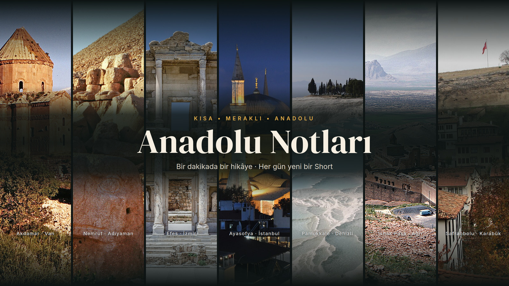

Anadolu'nun hikâyeleri, bir dakikada.
Anadolu Notları; Türkiye'nin yerlerini, tarihini ve kültürünü kısa videolarla anlatan bir kanal. Her gün yeni bir Short.
Anadolu Notları is a short-form video channel about the places, history and culture of Türkiye. A new Short every day.
Uploader tool / Yükleme aracı
This site also documents Anadolu Notları Publisher, a private tool the channel owner runs on their own computer to upload the channel's own videos to YouTube, TikTok and Instagram. TikTok login returns through this page. It is not offered to other users.